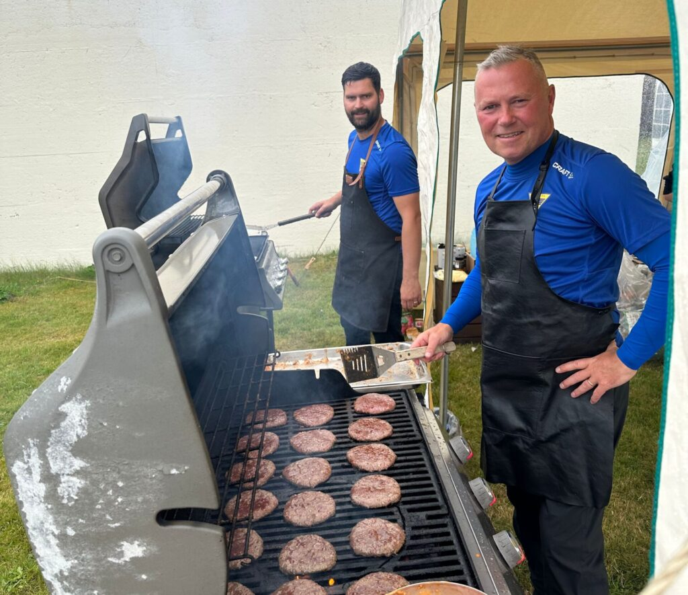

Responsible finances
Responsible management of the town’s finances and lower taxes and charges for residents.
Get to know Þór Sigurgeirsson beyond the title of mayor. This page introduces his professional background and experience in local government, as well as his role in the daily running of Seltjarnarnes. Read more about his journey to becoming mayor and what his work involves below.
Before becoming mayor, Þór worked in sales and marketing, with experience in insurance and project management. His professional background includes both business and local government. He served on the Seltjarnarnes town council from 2006 to 2010, before later taking on the role of mayor in June 2022.
As mayor, Þór manages the town’s daily operations and works closely with the town council on local services and community matters. His role connects the council’s decisions with the everyday running of the town. This involves working with others on practical matters that affect daily life in Seltjarnarnes.
In his 2022 campaign, Þór highlighted responsible finances, essential local services and public wellbeing among his priorities for Seltjarnarnes.
Responsible management of the town’s finances and lower taxes and charges for residents.
Keeping essential local services at the heart of the town’s priorities.
Supporting sport and public health for residents of all ages, from younger to older generations.
